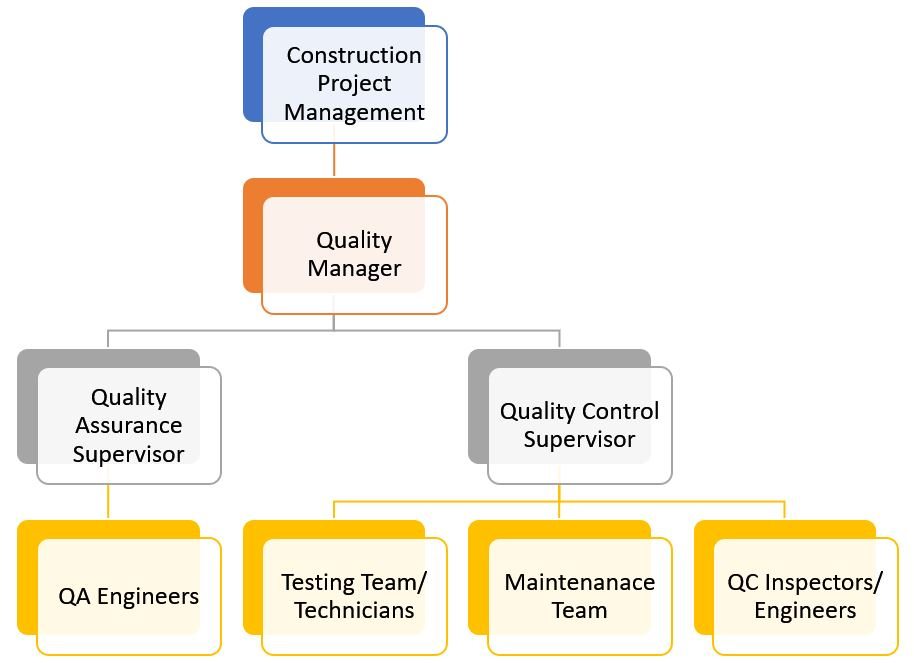

An important element of construction management is the monitoring of the quality of construction. The contractor is responsible for determining compliance with the prescribed quality requirements of the contract documents. In order to effectively carry out this, a planned and systematic approach to the quality management is required.
This Project Quality Plan forms part of the overall Quality Management system and its goals are to increase confidence that specified requirements will be met.
Arab Contractors is committed to keep the site in the standard and laws requirements and to implement a high quality in the field of the construction.
The Arab Contractors Company's concept of excellence and distinction is based on the principle that the design, development, controlling, administration, service providing and work execution are according to the quality standards.
Arab Contractors Company provides the training opportunities to raise the workers' efficiency, the required facilities for the sustainable improvement of the quality of the executed works and services. In addition to these we are totally committed to all the laws and legislations governing the construction industry.
This policy is revised periodically to ensure its continuity and fitness.
Project Quality Plan provides the principals to be followed by ISO 9001:2015 to implement its Quality Management System, in reference to Al-Alamien Towers Plan, in order to:
The project organization shall be adequately staffed and supported for implementing the quality Plan. The organizational chart below shows the relationships and relative ranks of the key personnel’s positions that affect the quality of works. It is based on the following:
This HSE Plan is to describe "Arab Contractors" safety related activities that are to be employed in the construction of the work. The Plan represents the contractor’s plan of conducting safe work, preserving personnel, property and equipment.
Each employee in the company is responsible for his own safety and the safety of people around him. It is therefore of great importance that each employee fully understands all of the company's HSE rules and standards; and those HSE rules and standards specifically concerned with work they perform.
This Plan is intended to be complimentary to the general code of practice and to the existing statutory regulations of Local Authorities, inclusive Labor Legislation with regard to medical, first aid, safety and training requirements.
This Project Health, Safety and Environmental Plan has been developed for “Al-Alamein Towers” project using a standard template, based upon OSHA legislation, and local laws, to keep and maintain high standard of protection to personnel and project properties and safe environmental conditions.
All sub-contractors shall also stick to this Plan.
"Arab Contractors" considers effective HSE management to be of prime importance to its business and has an overall goal to cause no harm to people or to the environment. The top management team is committed to continuous improvement in health, safety and environmental issues and recognizes the achievement of this overall goal is extremely challenging. The team is therefore committed to work with Clients, Partners, Suppliers and all employees towards achieving this goal. It is the responsibility of the Project Director to ensure this policy is communicated effectively to all employees. It is the duty of all employees to understand, implement and maintain this policy to ensure that individuals did not put the safety of themselves or others at risk, or increase the risk to damage to health or the environment.
This Policy is a live document and therefore shall be reviewed regularly as and when needed and upon change of any kind like changes to scope, origination, risk, technology, information, legislations and so on.
The objective of the HSE Plan is to avoid accidents which can injure the personnel or damage the properties in the project. This is done by ensuring that each individual in the project is aware of his/her HSE responsibilities and do their best to reduce all sources of damage to manageable level. This leads to protecting the health of the individual as well as other personnel in the project.
The HSE Plan will be implemented through:
The HSE plan has been developed through the four phases of Engineering, Administration, Performance Monitoring and Improvement. The four phase HSE plan forms a continual loop following administration so that the system is continually improved by lessons learned, new techniques and any revisions to the scope of work. HSE planning inputs are analyzed by process owners and the HSE Manager to prepare safety and environmental improvement methods for incorporation into operational procedures. The four phases are as follows:
Engineering phase is the Phase where Work place activities and their associated hazards are identified, assessed and classified. Priorities and objectives are assigned and an HSE plan is prepared. The inputs of HSE planning include information from workers, accident and incident records, local regulations, scope of work, existing building best practices, material specifications and recommendations for using materials and machines safely. These inputs are analyzed by process owners and the HSE Manager prepares HSE improvement methods for incorporation into operational procedures and method statements. HSE planning outputs include risk classification registers, HSE plans, safety checklists, permit to work procedures and job method statements.
The second Phase of the HSE plan includes communicating the results of phase One, explaining the plan to the Work force and other interested parties and providing the resources needed to achieve the HSE objectives. It includes:
This phase is the phase Where HSE performance data are obtained from the results of plan implementation which includes HSE inspections, Audit results, HSE incidents or accidents and non-conformances and corrective actions taken.
The Improvement phase consists of management review where decisions are taken to implement recommended HSE improvement actions resulting from the information obtained from the third phase. During management review, Decisions will be made on priorities and resources needed to improve the effectiveness of the HSE Management System.